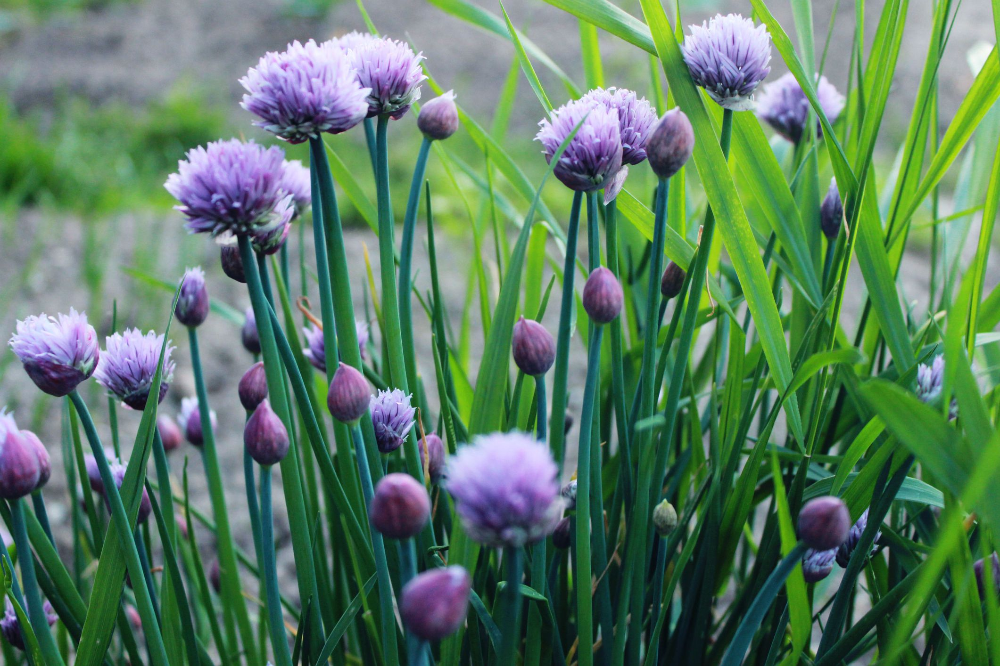

Hardy (H5) herbaceaous perennial
Hardy (H5) perennial
Hardy (H6) herbaceaous perennial
Division: established clumps of chives can be lifted in spring and divided. They should be split into groups of 6-10 bulbils and replanted into soil that has had a generous feed of compost. Divide the rhizomes of wild garlic in the autumn.